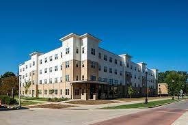

Caminele Universitatii Mircea Eliade
Bine ai venit!
Vino la caminele universitatii Mircea Eliade!

Caminul Ioan Slavici
Caminul Constantin Brancoveanu
Caminul Trandafiri
Caminul Ion Creanga
Noutati
- Taxa pentru cazarea la buget va creste cu 10RON la toate caminele, incepand din luna ianuarie 2024
- In complexul Trandafiri se va desfasura un concert de muzica jazz pe 6 mai.
Biletele se pot achizitiona de la administratorul caminului.
- S-a actualizat regulamentul cazarii in caminele universitatii in data de 10 aprilie.